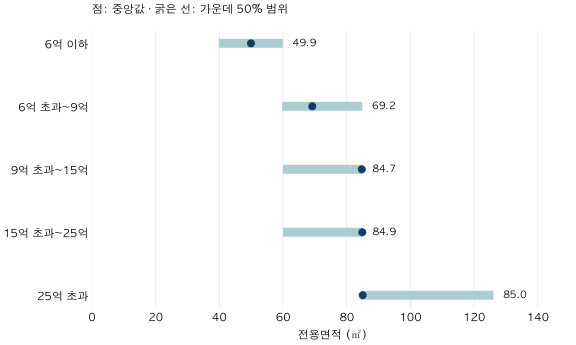

서울 아파트 · 실거래 데이터 노트
서울 아파트 6억·9억 예산, 거래된 집의 면적과 연식은?
서울 2025년 7월~2026년 6월 거래를 가격대별로 비교합니다. 전용면적·연식의 중앙값과 분포, 분기 차이를 확인하고 과거 거래를 현재 매물로 오해하지 않는 기준을 정리합니다.
분석 기간 · 2025년 7월~2026년 6월 계약 | 보유 자료 스냅샷 생성 · 2026-10-04
“서울에서 6억, 9억이면 어떤 집을 살 수 있을까?” 예산을 정하면 먼저 떠오르는 질문입니다. 실거래 자료는 이 질문의 출발점이 될 수 있습니다. 다만 알려주는 것은 그 가격에 거래된 집의 모습입니다. 지금 같은 조건의 매물이 남아 있는지까지 알려주지는 않습니다.
매매가격과 내가 마련할 총예산은 다릅니다
이 글의 구간은 계약서의 매매금액입니다. 취득·중개·수리·이사 비용을 합친 총예산이나 개인의 대출 가능액을 계산하지 않았습니다. 국토부 FAQ도 신고된 실제 거래금액과 일반시세의 의미를 구분합니다. 과거에 6억 원 거래가 있었다고 오늘 6억 원으로 같은 집을 계약할 수 있다고 보장할 수는 없습니다.
분석 대상은 서울 25개 구의 아파트 매매이며 전체 전용면적을 포함합니다. 네 분기를 합쳤고, 보유 자료에서 신고 반영에 주의가 필요한 2026년 7~9월은 제외했습니다. 사용한 스냅샷은 2026년 10월 4일 생성본입니다. 오래된 계약도 사후 수정될 수 있으며, 당시 실시간 정보로 복원한 분석은 아닙니다.
6억 원은 ‘6억 이하’, 9억 원은 ‘6억 초과~9억 이하’에 넣었습니다. 각 구간은 중복되지 않습니다. 주택 재고나 세대수를 가중하지 않고 정제된 계약 한 건에 한 표를 줬습니다. 거래가 잦은 단지는 여러 표를 갖기 때문에 이 분포는 서울의 모든 집을 한 채씩 센 분포와 다릅니다.
6억 이하와 6억 초과~9억 이하에서 면적은 얼마나 달랐을까요?
| 매매가격 | 거래 수 | 면적 중앙값 | 면적 가운데 50% | 연식 중앙값 |
|---|---|---|---|---|
| 6억 이하 | 13,068 | 49.94 | 39.84~59.94 | 29년 |
| 6억 초과~9억 이하 | 17,278 | 69.17 | 59.73~84.87 | 25년 |
| 9억 초과~15억 이하 | 21,424 | 84.72 | 59.96~84.97 | 22년 |
| 15억 초과~25억 이하 | 11,120 | 84.88 | 59.99~85.00 | 18년 |
| 25억 초과 | 4,756 | 85.00 | 84.53~126.04 | 20년 |
6억 이하 거래의 면적 중앙값은 49.94㎡, 6억 초과~9억 이하는 69.17㎡였습니다. 두 번째 구간의 가운데 50%는 59.73~84.87㎡에 놓였습니다. 중앙값 하나보다 이 범위를 함께 보면, 같은 가격대에서도 면적의 차이가 작지 않다는 사실이 드러납니다. 이는 개별 후보의 가격 범위나 추정 오차가 아니라 실제로 거래된 면적의 분포입니다.

9억 초과부터는 세 가격대의 면적 중앙값이 모두 약 85㎡ 부근입니다. 가격대가 크게 높아져도 가운데 면적이 비슷할 수 있다는 뜻입니다. 입지·단지·층·연식 등의 구성이 함께 달라지므로 가격 차이를 면적 하나로 설명할 수 없습니다. 어떤 요인이 얼마를 만들었는지는 이 표로 분해하지 않았습니다.
비싼 구간일수록 무조건 새 아파트일까요?
그렇지 않았습니다. 연식 중앙값은 15억 초과~25억 이하에서 18년, 25억 초과에서 20년이었습니다. 특정 지역의 구축이나 큰 면적 거래가 섞일 수 있지만, 이 결과만으로 그 원인을 확정할 수는 없습니다. ‘구축 프리미엄’이나 재건축 가치의 측정값도 아닙니다.
| 매매가격 | 전용 60㎡ 이하 | 연식 30년 이상 |
|---|---|---|
| 6억 이하 | 10,41179.7% | 6,28348.1% |
| 6억 초과~9억 이하 | 7,77845.0% | 4,87828.2% |
| 9억 초과~15억 이하 | 7,47834.9% | 3,85618.0% |
| 15억 초과~25억 이하 | 2,81625.3% | 2,12119.1% |
| 25억 초과 | 50110.5% | 1,67035.1% |
여기서 연식은 계약연도에서 마스터의 건축연도를 뺀 값입니다. 입주일로부터 정확히 지난 기간이나 건물 상태를 뜻하지 않습니다. 30년 기준도 비교를 위한 분류일 뿐 안전·수선·정비사업 가능성을 판정하는 선이 아닙니다.
69.17㎡와 25년을 합치면 ‘대표 아파트’가 될까요?
6억 초과~9억 이하의 면적 중앙값은 69.17㎡, 연식 중앙값은 25년입니다. 하지만 이를 붙여 ‘69.17㎡인 25년 된 집이 이 가격대의 대표’라고 말하면 안 됩니다. 두 중앙값은 각 열을 따로 정렬해서 얻었고, 같은 거래에서 나온 값이라는 보장이 없습니다.
| 같은 계약의 두 조건 | 거래 수 |
|---|---|
| 60㎡ 초과 · 30년 미만 | 6,769 |
| 60㎡ 초과 · 30년 이상 | 2,731 |
| 60㎡ 이하 · 30년 미만 | 5,631 |
| 60㎡ 이하 · 30년 이상 | 2,147 |
같은 가격대 안에 60㎡ 이하이면서 30년 미만인 거래도 5,631건, 60㎡ 초과이면서 30년 이상인 거래도 2,731건 있었습니다. 이 네 조합은 비교 질문을 구체화하는 데 도움이 됩니다. 어느 조합이 더 좋은지는 출퇴근·가구원·관리 상태 등 별도 조건에 달려 있습니다. 이 표에는 그런 선호와 현재 매물 상태가 없습니다.
1년을 합친 결과가 지금의 선택지와 같지는 않습니다
같은 6억 초과~9억 이하에서도 면적 중앙값은 2025년 3분기 60.81㎡, 4분기 64.38㎡, 2026년 1분기 75.64㎡, 2분기 72.33㎡였습니다. 기간을 바꾸면 가격대 안으로 들어오는 거래 구성이 달라집니다. 이 차이를 ‘같은 돈으로 살 수 있는 집이 넓어졌다’거나 ‘동일 주택이 싸졌다’고 바로 해석할 수 없습니다.
네 분기의 가격대별 결과 모두 보기
| 분기·가격대 | 건수 | 면적 | 연식 |
|---|---|---|---|
| 2025-Q3 · 6억 이하 | 2,724 | 49.94 | 28.5 |
| 2025-Q3 · 6억 초과~9억 이하 | 3,699 | 60.81 | 25 |
| 2025-Q3 · 9억 초과~15억 이하 | 5,365 | 84.65 | 21 |
| 2025-Q3 · 15억 초과~25억 이하 | 2,659 | 84.91 | 14 |
| 2025-Q3 · 25억 초과 | 872 | 95.94 | 21 |
| 2025-Q4 · 6억 이하 | 2,572 | 50.27 | 28 |
| 2025-Q4 · 6억 초과~9억 이하 | 3,809 | 64.38 | 25 |
| 2025-Q4 · 9억 초과~15억 이하 | 5,125 | 84.80 | 21 |
| 2025-Q4 · 15억 초과~25억 이하 | 2,702 | 84.92 | 18 |
| 2025-Q4 · 25억 초과 | 1,115 | 84.99 | 21 |
| 2026-Q1 · 6억 이하 | 3,476 | 49.94 | 29 |
| 2026-Q1 · 6억 초과~9억 이하 | 4,455 | 75.64 | 26 |
| 2026-Q1 · 9억 초과~15억 이하 | 4,871 | 84.75 | 22 |
| 2026-Q1 · 15억 초과~25억 이하 | 2,130 | 84.88 | 21 |
| 2026-Q1 · 25억 초과 | 811 | 99.39 | 22 |
| 2026-Q2 · 6억 이하 | 4,296 | 49.94 | 30 |
| 2026-Q2 · 6억 초과~9억 이하 | 5,315 | 72.33 | 26 |
| 2026-Q2 · 9억 초과~15억 이하 | 6,063 | 84.59 | 23 |
| 2026-Q2 · 15억 초과~25억 이하 | 3,629 | 84.82 | 19 |
| 2026-Q2 · 25억 초과 | 1,958 | 84.99 | 19 |
서울 전체를 묶었다는 한계도 있습니다. 같은 가격대라도 구·생활권·단지가 다르면 조건이 크게 달라질 수 있습니다. 권역별 세부 표는 일부 셀이 공개 최소 건수를 충족하지 않아 전체를 싣지 않았습니다. 빠진 값을 합계 차감으로 추론하게 만들지 않기 위한 처리입니다.
내 후보를 고를 때는 이렇게 좁혀보세요
- 금액을 분리합니다. 매매가격 한도와 부대비용·자금조달 조건을 따로 적습니다.
- 필수 조건을 먼저 정합니다. 생활권, 전용면적, 층, 건물 상태 중 바꾸기 어려운 조건을 고릅니다.
- 과거 거래를 같은 조건으로 좁힙니다. 해당 가격대의 서울 전체 중앙값을 관심 단지의 시세로 대체하지 않습니다.
- 관측 시점을 확인합니다. 최근 비교 가능한 거래의 계약일·해제 여부와 현재 매물 확인일을 구분합니다.
- 못 본 조건을 남깁니다. 내부 상태·수리 필요·실제 매물 여부는 현장과 추가 자료로 확인합니다.
가격대별 분포는 후보를 찾기 전 질문을 정리하는 도구입니다. ‘얼마면 무엇을 살 수 있다’는 결론보다 어떤 조건을 맞춰 비교해야 하는지를 알려주는 데 가치가 있습니다.
자료·계산·공개 범위
원천은 국토교통부 아파트 매매 실거래가 상세 자료이며, 프로젝트의 중복·해제 병합 후 strict 적격, 비토지임대부 조건을 적용했습니다. 해제·직거래를 제외한 관측 계약이며 전체 재고·매물 표본이 아닙니다. 단지 마스터 키를 통한 지역·건축연도 연결은 행 수를 보존했고, 이 67,646건의 유효 연식 결측은 0건이었습니다. 결측 0은 원천 건축연도의 오류가 없다는 뜻은 아닙니다.
중앙값·선형 보간 사분위수는 개별 관측값에서 계산했고, 관측 테이블과 별도의 정제 fact·마스터 경로를 대조했습니다. 모든 공개 비영 하위 셀은 10건 이상입니다. 검증한 공개 집계에는 개별 거래·단지 식별자를 넣지 않았습니다. 참조 종료월은 2026-09, 스냅샷 생성일은 2026-10-04이며 과거의 개별 정보 입수 시점은 복원하지 못했습니다. 본문·표는 반올림 전 값으로 계산합니다.
분석·집필: 파파펭귄 (Nobot Kang). 에이전트로 원천 대조·계산·초안 검토를 보조했습니다. 공식 안내 확인일: 2026-10-09.